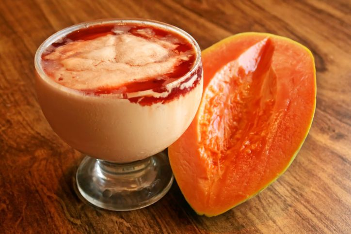

Culinária Feliz
Chefe de Cozinha: Igão
Data: 01/08/2018
Ingredientes
Material
Quantidade
Leite
250ml
Mamão
1kg
Arroz
3kg
Farinha
2kg
Modo de Preparo
Siga a Instrução:
Adicione o leite na panela de pressão;
Adicione o Mamão na panela de pressão;
Adicione o Arroz na panela de pressão;
Põe a farinha no prato e dá-lhe.
Torta de Mamão
